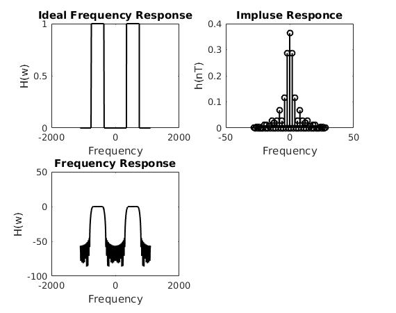
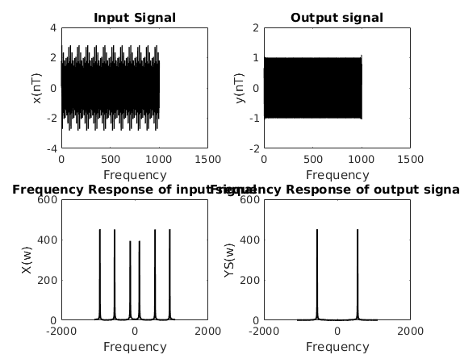

Contents
SPECIFICATIONS
Ap=0.1;
Aa=20;
wa1=300;
wp1=400;
wp2=700;
wa2=850;
Bt=min(abs(wp1-wa1),abs(wp2-wa2));
wc1=wp1-Bt/2;
wc2=wp2+Bt/2;
ws=2200;
T=2*pi/ws;
N=21;
samp=1001;
Kaiser window Design
deltaP=(10^(0.05*Ap)-1)/(10^(0.05*Ap)+1);
deltaA=10^(-0.05*Aa);
delta=min(deltaP,deltaA)
Aa=-20*log10(delta)
alpha= 0*(Aa<=21)+ (0.5842*(Aa - 21)^(0.4) + 0.07886*(Aa - 21))*(Aa<=50 & Aa>21) + 0.1102*(Aa - 8.7)*(Aa>50)
D= 0.9222 * (Aa<=21)+ (Aa-7.95)/14.36*(Aa>21)
N=floor(ws*D/Bt+1)
winKaiser=@(n) Kaiser(N,alpha,n);
w=-ws/2:0.01:ws/2;
n=-(N-1)/2:(N-1)/2;
Hone=@(w) ( 1*(abs(w))<=wc2 & abs(w)>=wc1 ).*(w<=ws/2 & w>=-ws/2);
H=@(w) Hone(w-(round(w/ws))*ws);
h=@(n) sinc(wc2*n*T/pi)/pi*T*wc2-sinc(wc1*n*T/pi)/pi*T*wc1;
ht=@(n) h(n).*winKaiser(n);
delta =
0.0058
Aa =
44.7970
alpha =
3.9524
D =
2.5659
N =
57
Frequency responce
Hw=zeros(1,samp);
parfor i=1:samp
x=i-(samp+1)/2;
for k=-(N-1)/2:(N-1)/2
Hw(i)=Hw(i)+ht(k)*exp(-1j*(x/(samp-1)*ws)*k*T);
end
end
subplot(2,2,1)
plot(w,H(w),'k','LineWidth',1.5);title('Ideal Frequency Response');xlabel('Frequency');ylabel('H(w)');
subplot(2,2,2)
stem(n,abs(ht(n)),'k','LineWidth',1.5);title('Impluse Responce');xlabel('Frequency');ylabel('h(nT)');
subplot(2,2,3)
plot(((1:samp)-(1+samp)/2)/(samp-1)*ws,mag2db(abs(Hw)),'k','LineWidth',1.5);title('Frequency Response');xlabel('Frequency');ylabel('H(w)');
passBand=ceil((ws/2+wp1)/ws*(samp)):floor((ws/2+wp2)/ws*(samp));
stopBand1=ceil((ws/2-wa1)/ws*(samp)):floor((ws/2+wa1)/ws*(samp));
stopBand2=ceil((ws/2+wa2)/ws*(samp)):floor((ws/2+ws/2)/ws*(samp));
a=min(abs(Hw(passBand)));
b=max(abs(Hw(passBand)));
Aa=mag2db(max(abs(Hw(stopBand2))))
Ap=20*log10(b/a)
Aa =
-51.1358
Ap =
0.0984

TESTING
figure,
n0=(1:1001);
x=sin((0+wa1)/2*n0*T)+sin((wp1+wp2)/2*n0*T)+sin((wa2+ws/2)/2*n0*T);
out2=conv(x,ht(n),'same');
Xw=fft(x);
Yw=fft(out2);
subplot(2,2,1)
plot(n0,x,'k','LineWidth',1);title('Input Signal');xlabel('Frequency');ylabel('x(nT)');
subplot(2,2,2)
plot(n0,out2,'k','LineWidth',0.7);title('Output signal');xlabel('Frequency');ylabel('y(nT)');
subplot(2,2,3)
plot((n0-(501))/1000*ws,abs(Xw),'k','LineWidth',1.5);title('Frequency Response of input signal');xlabel('Frequency');ylabel('X(w)');
subplot(2,2,4)
plot((n0-(501))/1000*ws,abs(Yw),'k','LineWidth',1.5);title('Frequency Response of output signal');xlabel('Frequency');ylabel('YS(w)');
